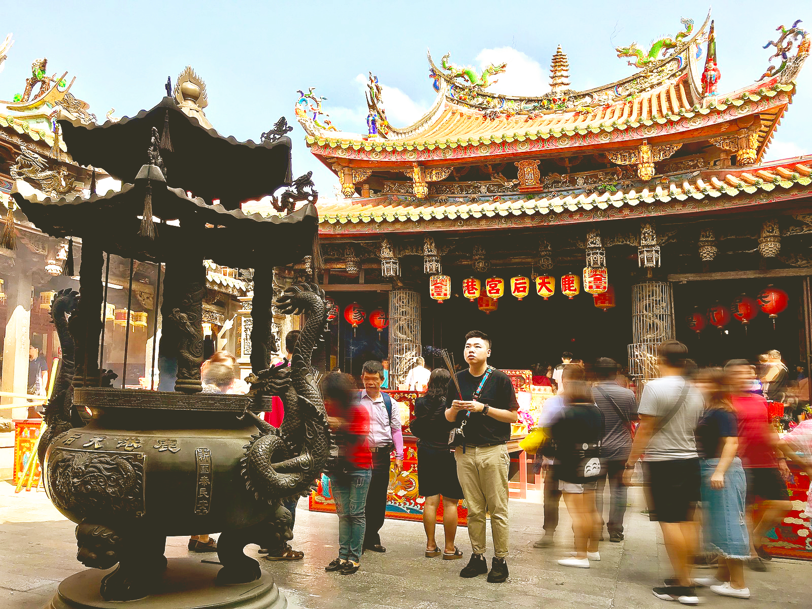
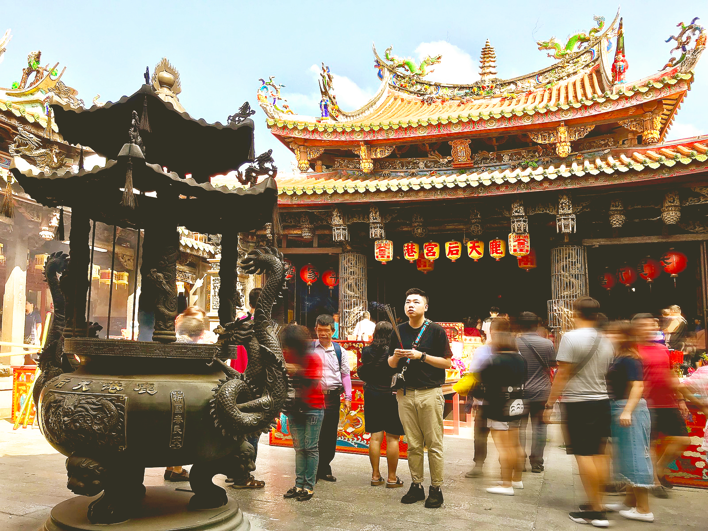

中部地區

臺中大甲
鎮瀾宮
歷史沿革
西元1730年，於清雍正年間自湄洲天后祖廟恭請媽祖神像來臺。後因香火鼎盛，於西元1732年在臺中市大甲區大甲里興建小祠，直到西元1770年改建小廟為「天后宮」。
西元1787年重建，才被載於臺灣淡水廳水獻中。往後由大甲士紳屢次發起重建並改為「鎮瀾宮」。
奉祀神佛
主祀鎮殿五媽祖，配祀千里眼將軍、順風耳將軍、三官大帝、中壇元帥。
另祀觀音佛祖、神農大帝、文昌帝君、註生娘娘、婆姐夫人、文武判官、玄壇元帥、金蕭薛三府王爺千歲等神。
聯絡資訊
地址：臺中市大甲區順天路158號
電話：+886-4-2676-3522
網站：http://www.dajiamazu.org.tw/
燈的類型
安太歲．光明燈．文昌燈
申請管道
現場點燈：現場接洽服務人員登記。
線上點燈：前往「大甲鎮瀾宮-線上點燈服務」申請。
相關費用及付款方式
安太歲：520 元｜光明燈：620 元｜文昌燈：820 元
◎ 現場點燈：請至現場付款。
◎ 線上點燈：以信用卡付款。
彰化鹿港
龍山寺
歷史沿革
始建於明末清初（相傳為明永曆年間），應係泉州先民移民來台時，自安海龍山寺迎請觀音菩薩佛像，於鹿仔港舊河道邊結廬為寺。於清乾隆五十一年（一七八六）遷建現址，歷二百三十餘年。
奉祀神佛
主祀觀音菩薩；配祀韋馱、伽藍尊者二大護法，正殿兩旁供奉十八羅漢、境主公、註生娘娘等神祇。
後殿供奉三世佛、地藏王菩薩、釋迦牟尼佛與地藏王菩薩之左右脅侍；
另祀北極大帝、風神、龍神、太歲星君、文昌帝君、大聖公、龍王尊神等神祇。
聯絡資訊
地址：彰化縣鹿港鎮龍山街100號
電話：+886-4-777-2472
網站：http://www.lungshan-temple.org.tw/
燈的類型
光明燈．安太歲．文昌燈
申請管道
僅提供現場點燈，現場接洽服務人員登記。
相關費用及付款方式
光明燈：300 元｜安太歲：500 元｜文昌燈：500 元
◎ 現場點燈：請至現場付款。


 

彰化鹿港
天后宮
歷史沿革
創建於明末1591年，創建迄今已逾四百餘年。
清康熙二十二年(1683)，施琅征臺，特請祖廟（福建省湄洲天后宮）「開基媽祖」前來坐鎮護軍。為台灣唯一奉祀湄洲祖廟開基媽祖神尊的廟宇，現被列為國定古蹟。
施世榜獻地，於雍正三年(1725)進行擴建工程；現今的天后宮型，主要完成於西元1927年，持續修整中。
奉祀神佛
主祀湄洲媽祖；配祀千里眼、順風耳。
另祀太歲星君、月下老人、註生娘娘、境主公、祿位公、本宮歷代諸僧師蓮座。
凌霄寶殿供奉玉皇大帝、三官大帝，兩旁配祀觀音菩薩、五榖大帝、女媧娘娘及水僊（仙）尊王。
同時也供奉斗姥元君及南北斗星君、文昌帝君及五文昌圖。
聯絡資訊
地址：彰化縣鹿港鎮中山路430號
電話：+886-4-777-9899
信箱：cs@otiga.com
網站：https://www.lugangmazu.org
燈的類型
光明燈．安太歲．闔家平安斗．文昌燈．拜斗燈．月老姻緣簿
申請管道
現場點燈：現場接洽服務人員登記。
線上點燈：前往「鹿港天后宮-線上點燈服務」申請。
相關費用及付款方式
闔家平安斗每盞 3600 元，其餘燈種每盞 600 元
◎ 現場點燈：請至現場付款。
◎ 線上點燈：提供線上刷卡、轉帳、超商代碼繳費、中國信託紅利兌換、橘子支付等方式。
雲林北港
朝天宮
歷史沿革
北港朝天宮為一座歷史悠久的媽祖廟。清康熙三十三年（西元1694年）臨濟宗等三十四代高憎樹壁自中國福建湄州恭奉媽祖神尊渡海來台，駐蹕笨港，開基立廟。
道光年間住持瑞合募款重修，福建水師提督王德祿奏請道光皇帝得誥封賜匾，「天上聖母」始見官方文書，亦因而成為全臺媽祖信仰中心。
咸豐四年，重修各殿。明治三十九年（西元1906年）嘉義地區大地震，廟內大殿受損，區長蔡然標乃謀於地方紳士募捐重建。
民國六十二年配合政府政策，改為財團法人，由王吟貴任董事長。朝天宮三百年來屢經擴建，宮宇巍峨，莊嚴富麗。
奉祀神佛
主祀媽祖，配祀香花女及千里眼、順風耳。
拜殿奉祀中壇元帥；福德正神殿奉祀土地公、境主公；註生娘娘殿奉祀註生娘娘、婆姐；文昌殿奉祀五文昌夫子。
另祀天官紫微大帝、地官清虛大帝、水官洞陰大帝等神祇。
聯絡資訊
地址：雲林縣北港鎮中山路178號
電話：+886-5-783-2055
網站：http://www.matsu.org.tw
燈的類型
太歲燈．光明燈．三官大帝燈．觀音佛祖燈
五文昌夫子燈．福德正神燈．註生娘娘燈．祈福燈．媽祖燈
申請管道
現場點燈：現場接洽服務人員登記。
線上點燈：前往「北港朝天宮-線上點燈服務」申請。
相關費用及付款方式
太歲燈：500 元｜祈福燈：1200 元｜媽祖燈：2000 元
其餘燈種每盞 1000 元
◎ 現場點燈：可現場付款或郵政劃撥。
◎ 線上點燈：金融卡轉帳付款。